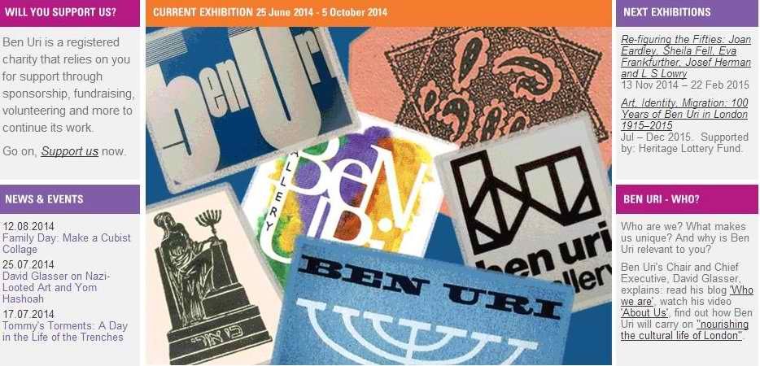
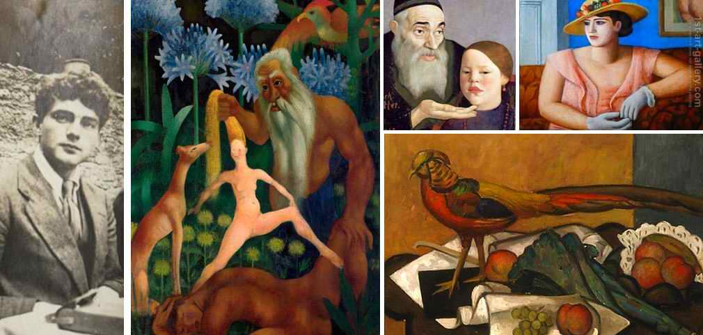
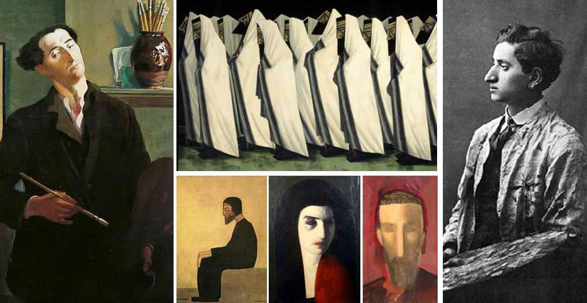
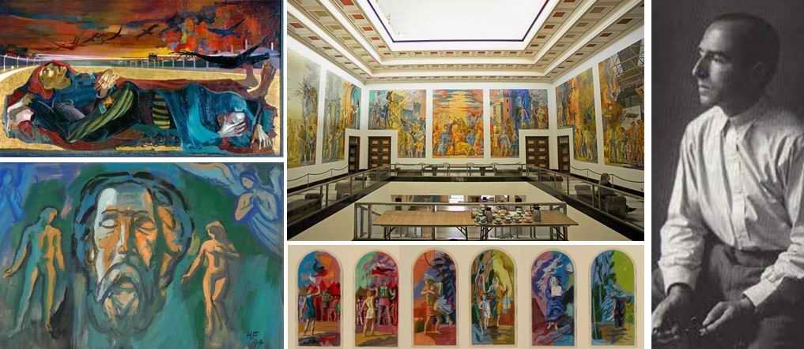

БЕН УРИ. 100 лет творческих поисков
В 2015 Музей "Бен-Ури" в Килберне (Лондон, Великобритания) отметит сто лет со дня основания. Бен-Ури - обращение к имени Бецалеля, который, как известно, был сыном Ури, т.е. на иврите - Бен-Ури.

Бецалель Бен (ивр. – сын) Ури, - мастер, который проектировал и строил мишкан (скинию) Завета со всеми ее принадлежностями, в т.ч. Ковчегом Завета и менорой (семисвешник), ставшими вечными символами Израиля.
Именем Бецалеля названы улицы и учреждения в разных городах мира. В их числе реабилитационный центр в Нью-Йорке, знаменитая "улица художников" Бецалель в Иерусалиме, улицы в Тель-Авиве, Рамат-Гане, Хайфе и других городах Израиля.
Начало «возрождения» его имени было положено в 1906 г. в Иерусалиме Академией искусств "Бецалель".
Творческие поиски места художника – израильтянина были частью поиска своей идентификации и восстановлением того, к чему некогда был призван Бецалель бен Ури (ок. 3,5тыс. лет назад).
Создание этой школы стало органичной частью бурно развивающегося сионистского движения – стремления сынов Израиля в землю отцов. Это в свою очередь означает не просто переселение в другую землю, но ВОЗВРАЩЕНИЕ в ПРИЗВАНИЕ, определенное Израилю Богом.
***
Среди евреев, живших в диаспоре, всегда было распространено стремление возвратиться к Сиону. Земля Израиля и Иерусалим были неотъемлемой частью еврейской культуры и традиционных ритуалов.

С XII века на фоне преследования евреев в христианских странах возникает стремление возвращения на Родину отцов.
1492 г. Еврейская община Палестины пополнилась еврейскими изгнанниками из Испании.
В XVIII-XIX веках было разработано множество документов с идеей возврата евреям исторической родины. Такие идеи были высказаны императором Наполеоном Бонапартом, русским декабристом Павлом Пестелем, голландским принцем Карлом де Линь и другими.
1862 г. Опубликованы первые практические планы создания еврейского государства в книгах раввина Цви-Гирша Калишера «В поисках Сиона» и Мозеса Гесса «Рим и Иерусалим».
1881 г. Большая волна современной иммиграции, известная как Первая алия. Тогда евреи спасались бегством от погромов в Восточной Европе.
Конец XVIII в. – вторая половина XIX в. в Европе бурно развивается движение эмансипации евреев.
1868 г. Бенджамин Дизраэли, будучи крещеным, не скрывая своего еврейства, стал премьер-министром Великобритании. Это обстоятельство способствовало улучшению положения евреев Великобритании.
1890 г. - устранены религиозные ограничения в Англии, евреи становятся равноправными гражданами.
1881 г. Волна погромов и преследований евреев в России в вызвала массовую иммиграцию в Великобританию, расширяя еврейскую общину Великобритании. Лондон является ее центром.
1887 г. Основано местное (английское) отделение Ховевей Цион. Сионизм получил мощную поддержку со стороны новых иммигрантов.
1897 г. Всемирный сионистский конгресс (собрания представителей еврейства) в Базеле (под руководством Теодора Герцля).
Еврейские батальоны британских королевских стрелков участвовали в боях за освобождение Эрец-Исраэль от власти Турции.
1917 г. правительство Великобритании опубликовало Декларацию Бальфура, в которой заявило о своем доброжелательном отношении к созданию национального очага еврейского народа в Эрец-Исраэль.
***
1906г. Профессор Борис (Барух) Шац основывает в ИЕРУСАЛИМЕ Академию искусств "Бецалель". Тогда она называлась «Бейт мидраша ле оманут еhудит - Бецалель» (Школа Еврейского искусства Бецалель).
1913 г. Под влиянием школы «Бецалель» Шаца в Иерусалиме (1906 г.) формируется группа радикальных модернистских художников Англии, названная BEN URI (ивр. – Бен (сын) Ури) Якобом Эпштейном (в 1954 году этот скульптор, за выдающийся вклад в современное искусство, был посвящён в рыцари).
«Бен Ури» - имеется в виду тот же Бецалель, о родословии которого в Торе сказано, что он был сыном Ури (бен Ури), сыном Хура из колена Еhуда. Почему Якоб Эпштейн не стал называть сообщество художников в точности таким же именем, что и Школа еврейского искусства в Иерусалиме? Возможно, он просто не желал повторений? Возможно, он имел более глубокое духовное понимание смысла этих еврейских слов «Бен Ури» - Сын Света Господнего. Таким образом он хотел ясно показать связь этой творческой группы с теми духовными творческими поисками, осуществляемыми в это время в Палестине.
1926-1933 президент художественного сообщества «Бен Ури» - известный художник Леопольд Пилиховский (англ. Leopold Pilichowski 1869–1934) из Польши.
1915 г. В Килберне (Лондон, Великобритания) был создан Музей "Бен-Ури". Создан он был еврейским художником Лазарем Берсоном, чтобы обеспечить художественное пространство для еврейских художников-иммигрантов, которые на тот момент не могли получить доступ к основным художественных сообществам, в связи с традиционными препятствиями, с коими сталкиваются все эмигрантские меньшинства. В 2015 г. музей отметит сто лет со дня основания.
Помимо имени «Ben Uri» и «Лондонский Еврейский музей искусств», видимо, с целью как-то «сгладить» ситуацию, ему было дано название - «Музей искусств для всех». (Ben Uri, The London Jewish Museum of Art, The Art Museum for Everyone).
Музей "Бен-Ури" называет себя также музеем "искусства, идентичности и иммиграции", и конечно, иммигрантский импульс в направлении британского авангарда является здесь доминирующей темой.
Вот некоторые из художников этого музея:
Джейкоб Эпстайн (англ. Jacob Epstein 1880-1959) (видео на англ. см. здесь)

Анри Годье-Бжеска (англ. Gaudier-Brzeska. 1891-1915) (видео на англ. см. здесь)

Марк Гертлер (англ. Mark Gertler, 1891—1939)

Яков Крамер (англ. Jacob Kramer, 1892–1962)

Ганс Файбух (нем. Hans Feibusch, 1898–1998)

В музее «Бен Ури», расположенном в центре Лондона, выставлена коллекция мирового уровня. Цель его представлять еврейское искусство и способствовать его развитию .
Это один из редких музеев в Европе, посвященных изучению творчества современных европейских художников еврейского происхождения в широком художественном контексте. Тематика их произведений не ограничивается иудаикой и еврейской историей. Музей обращается к исследованию социальных проблем и культурного наследия через искусство и историю общества.

- Музей Бен-Ури. Лондон
автор: Эфраим Калиш /TORAART/